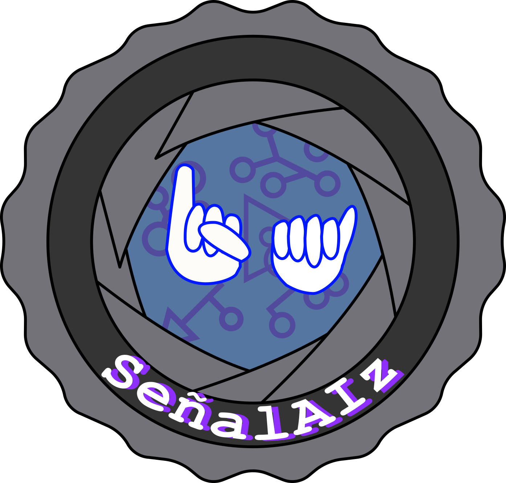
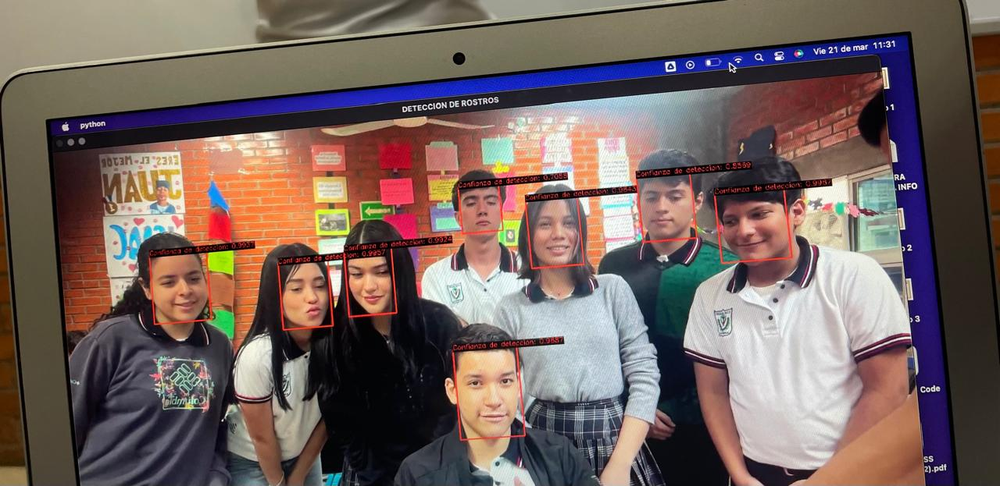

Somos un equipo que en la creación de su proyecto, busca reducir barreras comunicativas a las que personas sordomudas enfrentan. Es por ello que hemos llevado a cabo una inteligencia artificial que detecta, traduce y muestra el lenguaje de señas a través de una cámara.

Diversas investigaciones, tanto nacionales como internacionales, destacan el impacto
de la sordera en la vida de quienes la padecen. Se identifican retos clave como la
comunicación efectiva, la inserción laboral y académica, y la inclusión social.
En la comunidad sorda, cada persona puede tener una seña personal,
similar
a un nombre, que lo identifica dentro de la comunidad.
Según el Gobierno de México, en México, aproximadamente 2.3 millones de personas
padecen discapacidad auditiva, de las cuales más del 50 por ciento son mayores de 60 años; poco más
de 34 por ciento tienen entre 30 y 59 años y cerca de 2 por ciento son niñas y niños.
 12.23.02.png)
En caso de requerir el código, ingrese al siguiente link. En él se muestra el código
que puede copiar y pegar en python.
"La verdadera comunicación no comienza hablando sino escuchando. La primera condición de un buen comunicador es saber escuchar" - Mario Kaplún